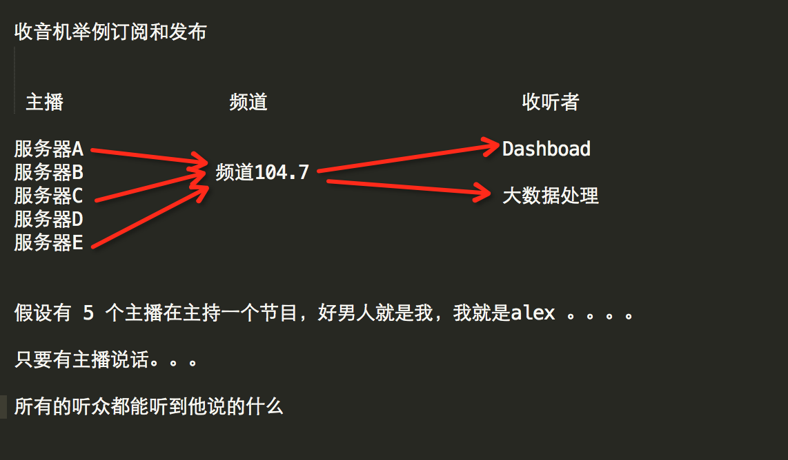

pip install redis
redis-py提供两个类Redis和StrictRedis用于实现Redis的命令，StrictRedis用于实现大部分官方的命令，并使用官方的语法和命令，Redis是StrictRedis的子类，用于向后兼容旧版本的redis-py
import redis
r = redis.Redis(host='127.0.0.1', port=6379, password='123456')
r.set('foo', 'bar')
print(r.get('foo')) # 'bar'redis-py使用connection pool来管理对一个redis server的所有连接，避免每次建立、释放连接的开销。默认，每个Redis实例都会维护一个自己的连接池。可以直接建立一个连接池，然后作为参数Redis，这样就可以实现多个Redis实例共享一个连接池
import redis
pool = redis.ConnectionPool(host='127.0.0.1', port=6379, password='123456')
r = redis.Redis(connection_pool=pool)
r.set('foo', 'bar')
print(r.get('foo')) # 'bar'String操作，redis中的String在在内存中按照一个name对应一个value来存储
| name ------------------ value n1 ------------------ v1 n2 ------------------ v2 n3 ------------------ v3 |
|---|
set(name, value, ex=None, px=None, nx=False, xx=False)：在Redis中设置值，默认，不存在则创建，存在则修改
参数：
ex：过期时间（秒）
px：过期时间（毫秒）
nx：如果设置为True，则只有name不存在时，当前set操作才执行
xx：如果设置为True，则只有name存在时，岗前set操作才执行
setnx(name, value)： 设置值，只有name不存在时，执行设置操作（添加）
setex(name, value, time)：设置值
参数：
time：过期时间（数字毫秒 或 timedelta对象）
psetex(name, time_ms, value)：设置值
参数：
time_ms：过期时间（数字毫秒 或 timedelta对象）
mset(*args, **kwargs)：批量设置值
mset(k1='v1', k2='v2')
mget({'k1': 'v1', 'k2': 'v2'})get(name)：获取值
mget(keys, *args)：批量获取
mget('ylr', 'wupeiqi')
或
r.mget([`'ylr', 'wupeiqi'])getset(name, value)：设置新值并获取原来的值
getrange(key, start, end)：获取子序列（根据字节获取，非字符）
参数：
name：Redis 的 name
start：起始位置（字节）
end：结束位置（字节）如： "武沛齐" ，0-3表示 "武"
setrange(name, offset, value)：修改字符串内容，从指定字符串索引开始向后替换（新值太长时，则向后添加）
参数：
offset：字符串的索引，字节（一个汉字三个字节）
value：要设置的值
setbit(name, offset, value)：对name对应值的二进制表示的位进行操作
参数：
name：redis的name
offset：位的索引（将值变换成二进制后再进行索引）
value：值只能是 1 或 0
注：如果在Redis中有一个对应： n1 = "foo"，那么字符串foo的二进制表示为：01100110 01101111 01101111，所以，如果执行setbit('n1', 7, 1)，则就会将第7位设置为1，那么最终二进制则变成 01100111 01101111 01101111，即："goo"
扩展，转换二进制表示：
# source = "武沛齐"
source = "foo"
for i in source:
num = ord(i)
print bin(num).replace('b','')
"""
特别的，如果source是汉字 "武沛齐"怎么办？
答：对于utf-8，每一个汉字占 3个字节，那么 "武沛齐" 则有 9个字节
对于汉字，for循环时候会按照 字节 迭代，那么在迭代时，将每一个字节转换 十进制数，然后再将十进制数转换成二进制
11100110 10101101 10100110 11100110 10110010 10011011 11101001 10111101 10010000
武 沛 齐
"""getbit(name, offset)：获取name对应的值的二进制表示中的某位的值 （0或1）
bitcount(key, start=None, end=None)：获取name对应的值的二进制表示中 1 的个数
参数：
key：Redis的name
start：位起始位置
end：位结束位置
bitop(operation, dest, *keys)：获取多个值，并将值做位运算，将最后的结果保存至新的name对应的值
参数：
operation：AND（并）、OR（或）、 NOT（非）、XOR（异或）
dest：新的Redis的name
*keys：要查找的Redis的name，如：bitop("AND", 'new_name', 'n1', 'n2', 'n3')，获取Redis中n1,n2,n3对应的值，然后讲所有的值做位运算（求并集），然后将结果保存 new_name 对应的值中
strlen(name)：返回name对应值的字节长度（一个汉字3个字节）
incr(self, name, amount=1)：自增 name对应的值，当name不存在时，则创建name＝amount，否则，则自增
参数：
name：Redis的name
amount：自增数（必须是整数）
注：同incrby
incrbyfloat(self, name, amount=1.0)：自增 name对应的值，当name不存在时，则创建name＝amount，否则，则自增
参数：
name：Redis的name
amount：自增数（浮点型）
decr(self, name, amount=1)：自减 name对应的值，当name不存在时，则创建name＝amount，否则，则自减
参数：
name：Redis的name
amount：自减数（整数）
append(key, value)：在redis name对应的值后面追加内容
参数：
key：redis的name
value：要追加的字符串
redis中Hash在内存中的存储格式如下：
| name ---------------- hash n1 ---------------- k1 ---- v1 k2 ---- v2 k3 ---- v3 n2 ---------------- m1 ---- v12 m2 ---- v15 |
|---|
hset(name, key, value)：name对应的hash中设置一个键值对（不存在，则创建；否则，修改）
参数
name：redis的name
key：name对应的hash中的key
value：name对应的hash中的value
注：hsetnx(name, key, value),当name对应的hash中不存在当前key时则创建（相当于添加）
hmset(name, mapping)：在name对应的hash中批量设置键值对
参数：
name：redis的name
mapping：字典，如：{'k1':'v1', 'k2': 'v2'}
如：r.hmset('xx', {'k1':'v1', 'k2': 'v2'})
hget(name,key):在name对应的hash中获取根据key获取value
hmget(name, keys, *args)：在name对应的hash中获取多个key的值
参数：
name：reids对应的name
keys：要获取key集合，如：['k1', 'k2', 'k3']
*args：要获取的key，如：k1,k2,k3
如：r.mget('xx', ['k1', 'k2'])或print r.hmget('xx', 'k1', 'k2')
hgetall(name)：获取name对应hash的所有键值
hlen(name)： 获取name对应的hash中键值对的个数
hkeys(name)：获取name对应的hash中所有的key的值
hvals(name)：获取name对应的hash中所有的value的值
hexists(name, key)：检查name对应的hash是否存在当前传入的key`
hdel(name, *keys)：将name对应的hash中指定key的键值对删除
hincrby(name, key, amount=1)：自增name对应的hash中的指定key的值，不存在则创建key=amount
参数：
name：redis中的name
key：hash对应的key
amount：自增数（整数）
hincrbyfloat(name, key, amount=1.0)：自增name对应的hash中的指定key的值，不存在则创建key=amount
参数：
name：redis中的name
key：hash对应的key
amount：自增数（浮点数）
注：自增name对应的hash中的指定key的值，不存在则创建key=amount
hscan(name, cursor=0, match=None, count=None)：增量式迭代获取，对于数据大的数据非常有用，hscan可以实现分片的获取数据，并非一次性将数据全部获取完，从而放置内存被撑爆# 第一次：cursor1, data1 = r.hscan('xx', cursor=0, match=None, count=None)
# 第二次：cursor2, data1 = r.hscan('xx', cursor=cursor1, match=None, count=None)
# ...
# 直到返回值cursor的值为0时，表示数据已经通过分片获取完毕hscan_iter(name, match=None, count=None)：利用yield封装hscan创建生成器，实现分批去redis中获取数据
参数：
match：匹配指定key，默认None 表示所有的key
count：每次分片最少获取个数，默认None表示采用Redis的默认分片个数
如：
for item in r.hscan_iter('xx'):
print itemredis中的List在在内存中按照一个name对应一个List来存储。
| name ---------------------- values n1 ---------------------- [v1, v2, ....] n2 ---------------------- [v1, v2, ....] |
|---|
lpush(name,values)：在name对应的list中添加元素，每个新的元素都添加到列表的最左边
如r.lpush('oo', 11,22,33)， 保存顺序为: 33,22,11
扩展：rpush(name, values) 表示从右向左操作
lpushx(name,value)：在name对应的list中添加元素，只有name已经存在时，值添加到列表的最左边
更多: rpushx(name, value) 表示从右向左操作
llen(name)：name对应的list元素的个数
linsert(name, where, refvalue, value))：在name对应的列表的某一个值前或后插入一个新值
参数：
name：redis的name
where：BEFORE或AFTER
refvalue：标杆值，即：在它前后插入数据
value：要插入的数据
r.lset(name, index, value)：对name对应的list中的某一个索引位置重新赋值
参数：
name：redis的name
index：list的索引位置
value：要设置的值
r.lrem(name, value, num)：在name对应的list中删除指定的值
参数：
name：redis的name
value：要删除的值
num：
num=0，删除列表中所有的指定值
num=2,从前到后，删除2个
num=-2,从后向前，删除2个
lpop(name)：在name对应的列表的左侧获取第一个元素并在列表中移除，返回值则是第一个元素
更多：rpop(name) 表示从右向左操作
lindex(name, index)：在name对应的列表中根据索引获取列表元素
lrange(name, start, end)：在name对应的列表分片获取数据
参数：
name：redis的name
start：索引的起始位置
end：索引结束位置
ltrim(name, start, end)：在name对应的列表中移除没有在start-end索引之间的值
参数：
name：redis的name
start：索引的起始位置
end：索引结束位置
rpoplpush(src, dst)： 从一个列表取出最右边的元素，同时将其添加至另一个列表的最左边
参数：
src：要取数据的列表的name
dst：要添加数据的列表的name`
blpop(keys, timeout)：将多个列表排列，按照从左到右去pop对应列表的元素
参数
keys：redis的name的集合
timeout：超时时间，当元素所有列表的元素获取完之后，阻塞等待列表内有数据的时间（秒）, 0 表示永远阻塞
更多：r.brpop(keys, timeout)，从右向左获取数据
brpoplpush(src, dst, timeout=0)：从一个列表的右侧移除一个元素并将其添加到另一个列表的左侧
参数：
src：取出并要移除元素的列表对应的name
dst：要插入元素的列表对应的name
timeout：当src对应的列表中没有数据时，阻塞等待其有数据的超时时间（秒），0 表示永远阻塞
def list_iter(name):
"""
自定义redis列表增量迭代
:param name: redis中的name，即：迭代name对应的列表
:return: yield 返回 列表元素
"""
list_count = r.llen(name)
for index in xrange(list_count):
yield r.lindex(name, index)
# 使用
for item in list_iter('pp'):
print(item)Set集合就是不允许重复的列表
sadd(name,values)： name对应的集合中添加元素
scard(name)：获取name对应的集合中元素个数
sdiff(keys, *args)：在第一个name对应的集合中且不在其他name对应的集合的元素集合
sdiffstore(dest, keys, *args)：获取第一个name对应的集合中且不在其他name对应的集合，再将其新加入到dest对应的集合中
sinter(keys, *args)：获取多一个name对应集合的并集
sinterstore(dest, keys, *args)：获取多一个name对应集合的并集，再讲其加入到dest对应的集合中
sismember(name, value)：检查value是否是name对应的集合的成员
smembers(name)：获取name对应的集合的所有成员
smove(src, dst, value)：将某个成员从一个集合中移动到另外一个集合
spop(name)：从集合的右侧（尾部）移除一个成员，并将其返回
srandmember(name, numbers)：从name对应的集合中随机获取 numbers 个元素
srem(name, values)：在name对应的集合中删除某些值sunion(keys, *args)：获取多一个name对应的集合的并集
sunionstore(dest,keys, *args)：获取多一个name对应的集合的并集，并将结果保存到dest对应的集合中
sscan(name, cursor=0, match=None, count=None)sscan_iter(name, match=None, count=None)： 同字符串的操作，用于增量迭代分批获取元素，避免内存消耗太大
在集合的基础上，为每元素排序；元素的排序需要根据另外一个值来进行比较，所以，对于有序集合，每一个元素有两个值，即：值和分数，分数专门用来做排序。
zadd(name, *args, **kwargs)：在name对应的有序集合中添加元素
如:zadd('zz', 'n1', 1, 'n2', 2)或zadd('zz', n1=11, n2=22)
zcard(name)：获取name对应的有序集合元素的数量
zcount(name, min, max)：获取name对应的有序集合中分数 在 [min,max] 之间的个数
zincrby(name, value, amount)：自增name对应的有序集合的 name 对应的分数
r.zrange( name, start, end, desc=False, withscores=False, score_cast_func=float)：按照索引范围获取name对应的有序集合的元素
参数：
name：redis的name
start：有序集合索引起始位置（非分数）
end：有序集合索引结束位置（非分数）
desc：排序规则，默认按照分数从小到大排序
withscores：是否获取元素的分数，默认只获取元素的值
score_cast_func：对分数进行数据转换的函数
更多：
从大到小排序：zrevrange(name, start, end, withscores=False, score_cast_func=float)
按照分数范围获取name对应的有序集合的元素：zrangebyscore(name, min, max, start=None, num=None, withscores=False, score_cast_func=float)
从大到小排序： zrevrangebyscore(name, max, min, start=None, num=None, withscores=False, score_cast_func=float)
zrank(name, value)：获取某个值在 name对应的有序集合中的排行（从 0 开始）
更多：
zrevrank(name, value)，从大到小排序
zrangebylex(name, min, max, start=None, num=None)：当有序集合的所有成员都具有相同的分值时，有序集合的元素会根据成员的 值 （lexicographical ordering）来进行排序，而这个命令则可以返回给定的有序集合键 key 中， 元素的值介于 min 和 max 之间的成员
对集合中的每个成员进行逐个字节的对比（byte-by-byte compare）， 并按照从低到高的顺序， 返回排序后的集合成员。 如果两个字符串有一部分内容是相同的话， 那么命令会认为较长的字符串比较短的字符串要大
参数：
name：redis的name
min：左区间（值）。
+ 表示正无限；
- 表示负无限；
( 表示开区间；
[ 则表示闭区间
max：右区间（值）
start：对结果进行分片处理，索引位置
num：对结果进行分片处理，索引后面的num个元素
如：ZADD myzset 0 aa 0 ba 0 ca 0 da 0 ea 0 fa 0 ga
r.zrangebylex('myzset', "-", "[ca") 结果为：['aa', 'ba', 'ca']
更多：
从大到小排序zrevrangebylex(name, max, min, start=None, num=None)
zrem(name, values)：删除name对应的有序集合中值是values的成员
如：zrem('zz', ['s1', 's2'])
zremrangebyrank(name, min, max)：根据排行范围删除
zremrangebyscore(name, min, max)：根据分数范围删除
zremrangebylex(name, min, max)：根据值返回删除
zscore(name, value)：获取name对应有序集合中 value 对应的分数
zinterstore(dest, keys, aggregate=None)： 获取两个有序集合的交集，如果遇到相同值不同分数，则按照aggregate进行操作
aggregate的值为: SUM MIN MAX
zunionstore(dest, keys, aggregate=None)：获取两个有序集合的并集，如果遇到相同值不同分数，则按照aggregate进行操作
aggregate的值为: SUM MIN MAX
zscan(name, cursor=0, match=None, count=None, score_cast_func=float)
zscan_iter(name, match=None, count=None,score_cast_func=float)：同字符串相似，相较于字符串新增score_cast_func，用来对分数进行操作
其他常用操作
delete(*names)：根据删除redis中的任意数据类型
exists(name)：检测redis的name是否存在
keys(pattern='*')：根据模型获取redis的name
更多：
KEYS \*：匹配数据库中所有 key 。
KEYS h?llo： 匹配 hello ， hallo 和 hxllo 等。
KEYS h\*llo ：匹配 hllo 和 heeeeello 等。
KEYS h[ae]llo：匹配 hello 和 hallo ，但不匹配 hillo
expire(name ,time)：为某个redis的某个name设置超时时间
rename(src, dst)：对redis的name重命名为
move(name, db))：将redis的某个值移动到指定的db下
randomkey()：随机获取一个redis的name（不删除）
type(name)：获取name对应值的类型
scan(cursor=0, match=None, count=None)
scan_iter(match=None, count=None)：同字符串操作，用于增量迭代获取key
redis-py默认在执行每次请求都会创建（连接池申请连接）和断开（归还连接池）一次连接操作，如果想要在一次请求中指定多个命令，则可以使用pipline实现一次请求指定多个命令，并且默认情况下一次pipline 是原子性操作。
import redis
pool = redis.ConnectionPool(host='10.211.55.4', port=6379)
r = redis.Redis(connection_pool=pool)
# pipe = r.pipeline(transaction=False)
pipe = r.pipeline(transaction=True)
pipe.multi()
pipe.set('name', 'alex')
pipe.set('role', 'sb')
pipe.execute()实现计数器
import redis
conn = redis.Redis(host='192.168.1.41',port=6379)
conn.set('count',1000)
with conn.pipeline() as pipe:
# 先监视，自己的值没有被修改过
conn.watch('count')
# 事务开始
pipe.multi()
old_count = conn.get('count')
count = int(old_count)
if count > 0: # 有库存
pipe.set('count', count - 1)
# 执行，把所有命令一次性推送过去
pipe.execute()
发布者：服务器
订阅者：Dashboad和数据处理
Demo如下：
# RedisHelper
import redis
class RedisHelper:
def __init__(self):
self.__conn = redis.Redis(host='10.211.55.4')
self.chan_sub = 'fm104.5'
self.chan_pub = 'fm104.5'
def public(self, msg):
self.__conn.publish(self.chan_pub, msg)
return True
def subscribe(self):
pub = self.__conn.pubsub()
pub.subscribe(self.chan_sub)
pub.parse_response()
return pub订阅者：
from monitor.RedisHelper import RedisHelper
obj = RedisHelper()
redis_sub = obj.subscribe()
while True:
msg = redis_sub.parse_response()
print(msg)发布者：
from monitor.RedisHelper import RedisHelper
obj = RedisHelper()
obj.public('hello')redis重的sentinel主要用于在redis主从复制中，如果master顾上，则自动将slave替换成master
from redis.sentinel import Sentinel
# 连接哨兵服务器(主机名也可以用域名)
sentinel = Sentinel([
('10.211.55.20', 26379),
('10.211.55.20', 26380)
], socket_timeout=0.5)
# 获取主服务器地址
# master = sentinel.discover_master('mymaster')
# print(master)
# 获取从服务器地址
# slave = sentinel.discover_slaves('mymaster')
# print(slave)
# 获取主服务器进行写入
# master = sentinel.master_for('mymaster')# master.set('foo', 'bar')
# 获取从服务器进行读取（默认是round-roubin）
# slave = sentinel.slave_for('mymaster', password='redis_auth_pass')
# r_ret = slave.get('foo')# print(r_ret)